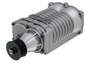

SuperCharger
Um supercharger é um dispositivo mecânico que comprime o ar admitido em um motor de combustão interna antes de entrar nos cilindros. Assim como o turbo compressor, seu objetivo principal é aumentar a potência e o desempenho do motor. No entanto, ao
contrário do turbo compressor, um supercharger é acionado mecanicamente pelo motor, geralmente por meio de uma correia conectada ao virabrequim. O funcionamento básico de um supercharger envolve um conjunto de rotores ou palhetas giratórias dentro
de uma carcaça. Quando o motor está em funcionamento, a rotação do virabrequim aciona o supercharger, fazendo com que os rotores ou palhetas girem a alta velocidade. Isso cria uma pressão de ar mais elevada do que a atmosférica na entrada do motor.
Como resultado, o ar admitido no motor é comprimido antes de entrar nos cilindros. Esse ar comprimido permite uma maior quantidade de combustível a ser injetada nos cilindros, resultando em uma queima mais eficiente e uma produção de potência
significativamente aumentada. Uma das principais vantagens do supercharger é a resposta imediata do acelerador. Ao contrário do turbo compressor, que pode ter um atraso de resposta devido ao tempo necessário para a turbina atingir velocidade suficiente,
um supercharger está sempre em funcionamento enquanto o motor está ligado. Isso resulta em uma entrega de potência mais instantânea e linear em comparação com o turbo
SuperCharger

Adicionar ao carrinho
Comprar